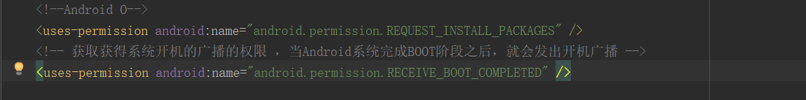
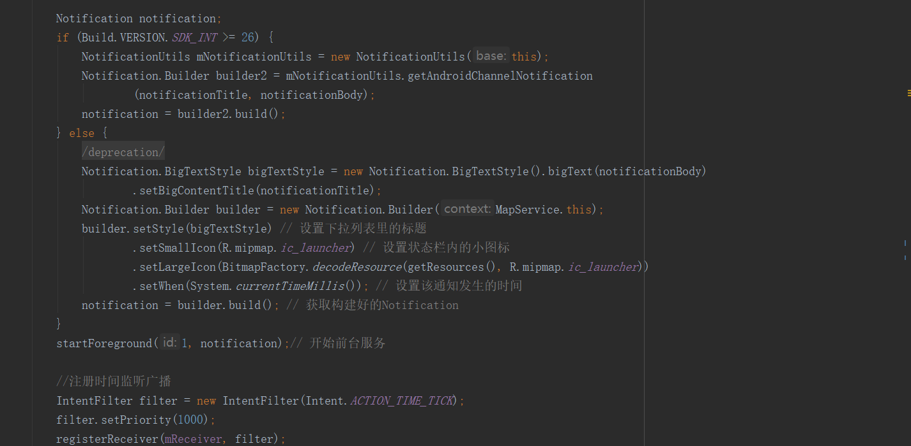
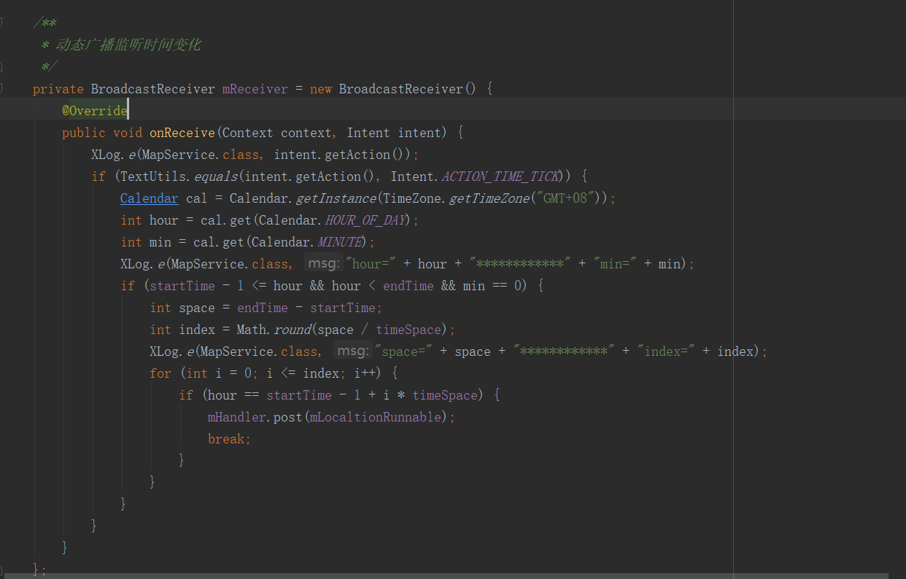

需求： 根据后台规定时间段，时间间隔上传位置信息
尝试的方法：
1.使用极光推送，后台推送消息手机端进行定位获取位置信息上传
2.开启服务按照时间间隔上传位置信息
缺点：
第一种方法：
受限于极光后台；当应用未启动时接收不到消息无法进行通信；再次启动时会收到多条消息，发送多条信息
第二种方法：
受限于用户的启动时间，不能做到准点发送以上两种方法也能做到信息上传，但都不很理想。
经过多次尝试，最后动态注册事件变化进行定位获取位置信息首先，监听开机广播，在开机广播中开启定位服务，需要加入开机广播权限，如下：  在定位服务中动态注册时间变化广播：  在BroadcastReceiver中获取当前时间，判断是否在规定范围内，如果在使用百度定位获取当前位置信息上传。 